Home
Shope
About
Contact
Bijoux Artisanaux
Poterie et Ceramiques
Textiles Tissés à la Main
Outils ménagers traditionnels
Bijoux Artisanaux
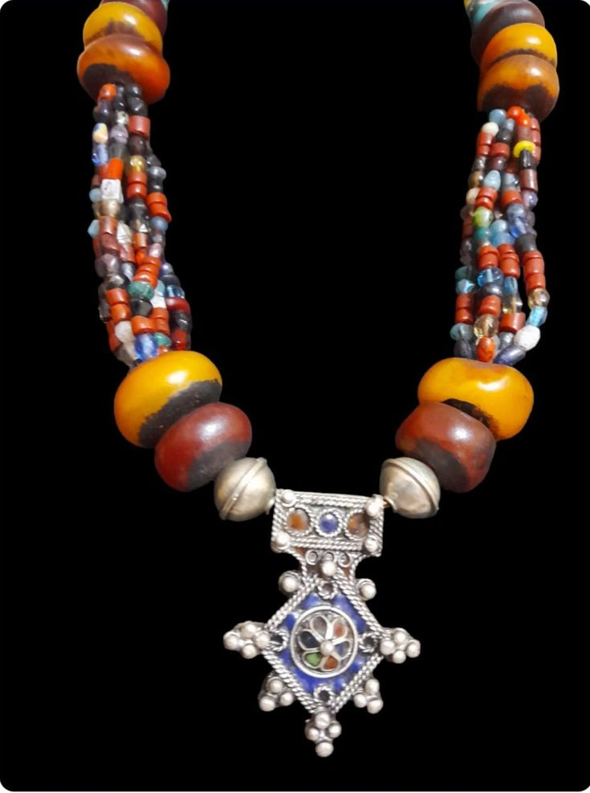
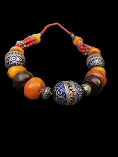
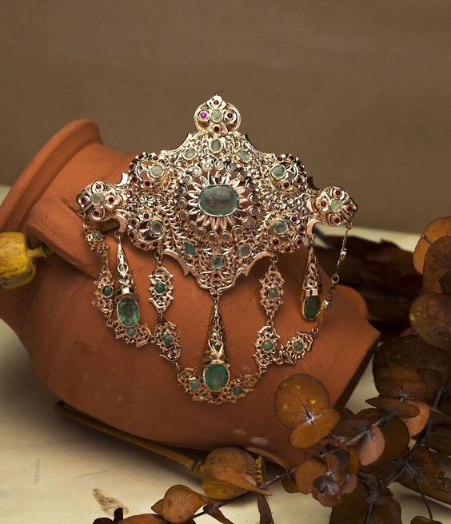
Poterie et Ceramiques
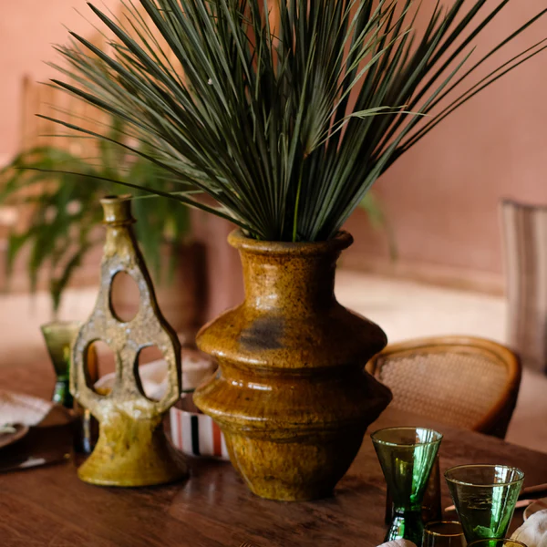
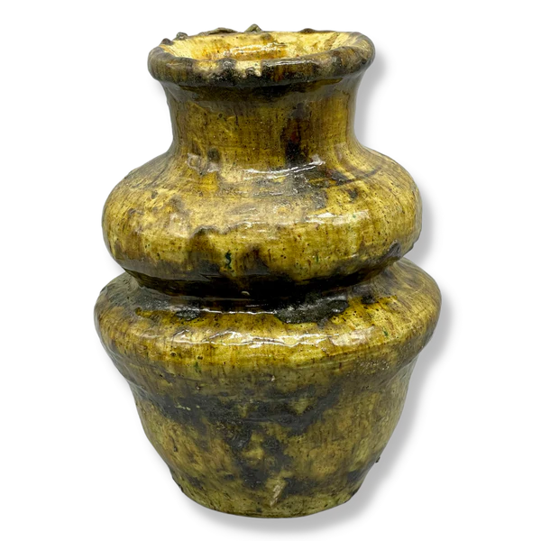
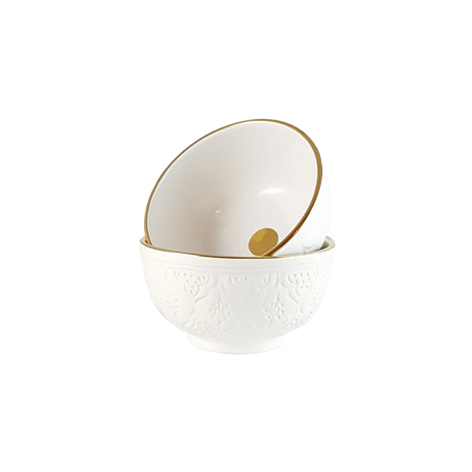
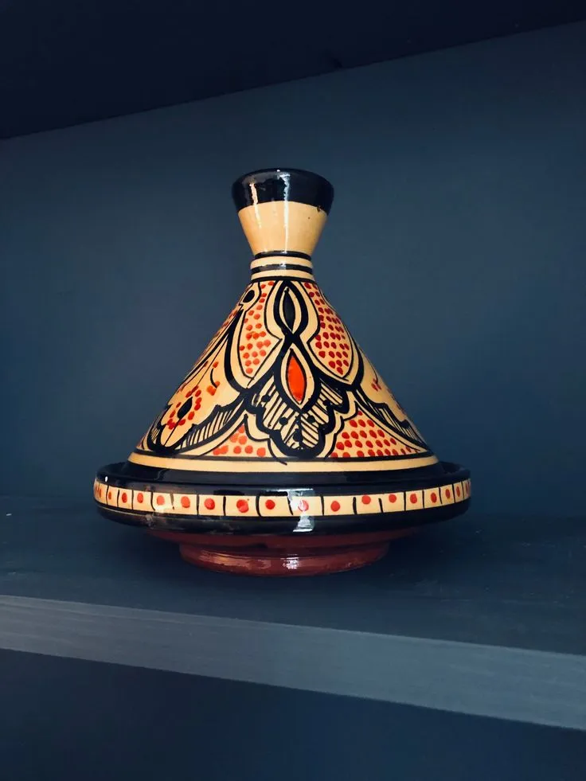
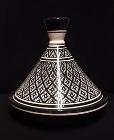
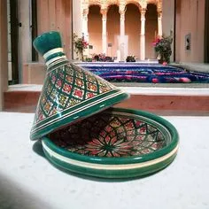
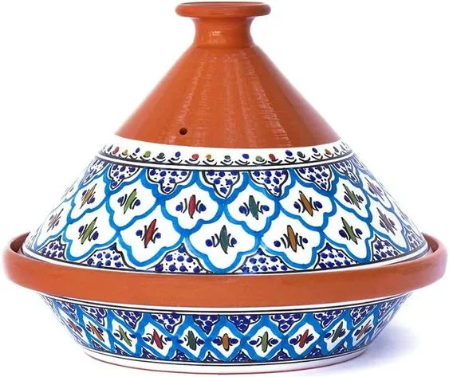
Textiles Tissés à la Main
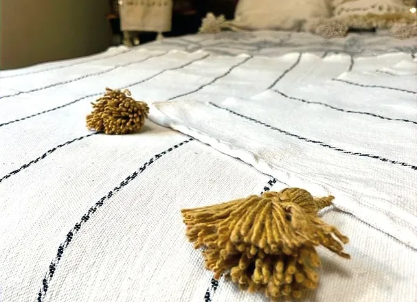
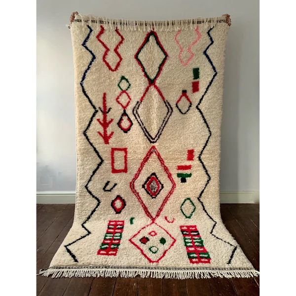
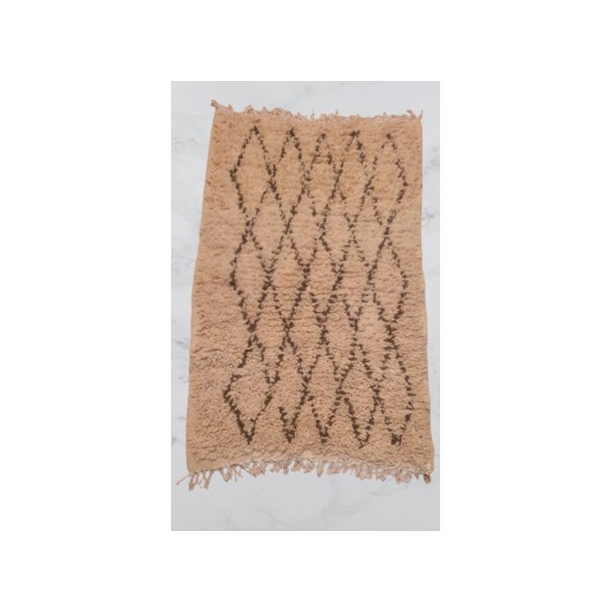
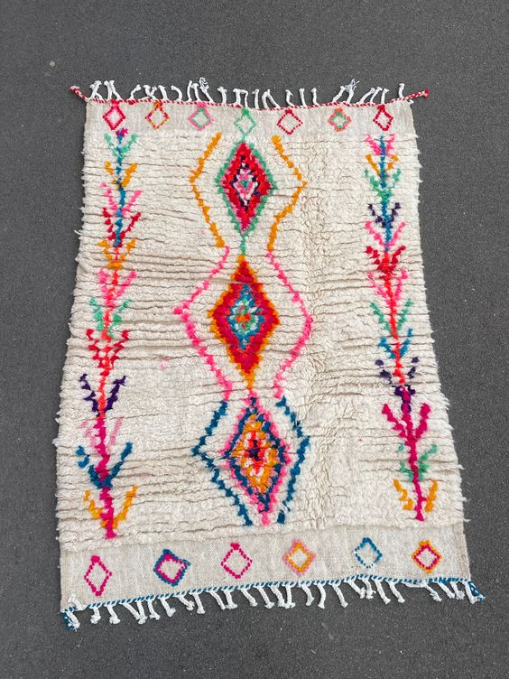
Textiles Tissés à la Main
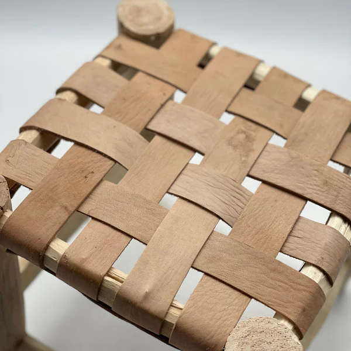